Marcela's story
A documented record of domestic abuse
For years, Marcela kept quiet about what happened inside her marriage to Nicholas Walter Belletto of Tallahassee, Florida. This page sets out what court records, her saved messages and her recordings show, so that others can recognize the pattern and know where to find help.
Before you read
This page describes physical violence and a gunshot fired inside a home. It contains strong language, an audio recording of a violent argument, and photographs of injuries. The photographs stay hidden until you choose to open them.
If someone checks your phone or computer, the Quick exit button at the top of the page leaves this site immediately. Go straight to help and hotlines.
At a glance
- 2 arrests on domestic violence charges in Florida, in 2014 and 2023, involving two different wives
- 26 weeks of batterers' intervention counseling ordered by a county court in 2015
- 1 round fired into a bedroom mirror about ten feet from Marcela in 2023, according to a sheriff's deputy's sworn affidavit
An arrest or a charge is not a conviction. Every statement on this page is tied to its source.
The record
Two kinds of sources appear on this page. Public court files are marked Court record. Material Marcela saved on her own phone is marked Marcela's evidence.
-
St. Petersburg, FloridaCourt record
Arrested for domestic battery
St. Petersburg police arrested Nicholas Belletto shortly after midnight on a misdemeanor charge of domestic battery. The woman involved was his wife at the time, not Marcela. The arrest affidavit states that he:
“aggressively grabbed the victim by both arms, slamming her against a wall, then onto the ground. The incident was observed by two independent witnesses.”
According to the affidavit, after being read his rights he admitted grabbing his wife by the arms and denied slamming her against a wall and onto the ground. She declined prosecution.
Source: Complaint/Arrest Affidavit, Pinellas County Court, case 14-26020-MM.
-
Clearwater, FloridaCourt record
Entered a domestic violence deferred prosecution program
In that case he signed a 12-month Domestic Violence Deferred Prosecution Agreement, which a county judge approved. The court ordered 26 weeks of BIP (batterers' intervention program) counseling. As a condition, he agreed not to apply for or possess any firearm or ammunition. The agreement he signed states:
“The Defendant agrees that he is in need of counseling. For purposes of participating in this program, the Defendant admits his guilt or that participation in the program is in his best interest.”
A deferred prosecution agreement is not a conviction.
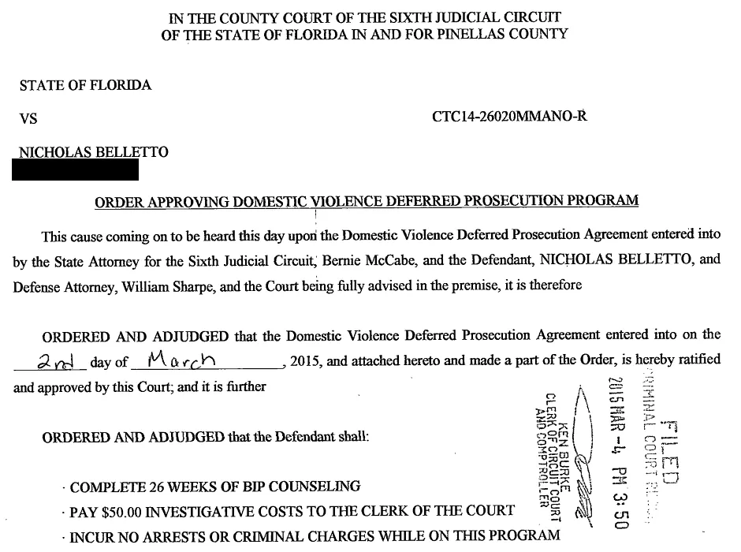
The court's order, filed March 4, 2015. An identification number has been blacked out. Source: Deferred Prosecution Agreement and Order, Pinellas County Court, case CTC14-26020MMANO.
-
Tallahassee, FloridaCourt record
Arrested after a gunshot in the bedroom
A Leon County Sheriff's deputy arrested Nicholas Belletto at the couple's home on a charge of aggravated assault with a deadly weapon without intent to kill, marked as domestic violence. Marcela told the deputy that he had had six or seven drinks the evening before. The deputy's sworn affidavit records her account of what happened at about 2:38 that morning:
![Excerpt from the arrest affidavit: 'While Marcella was sitting up in the bed, Nicholas walked to their bedroom dresser located in front of their bed and brandished a firearm from the drawer. While Nicholas was standing in front of the dresser with the firearm in his hand, he held the firearm up to his head and made the statement, You make me want to kill myself. While holding the firearm, Nicholas fired off a round into a large mirror which was up against their bedroom wall. Right before Nicholas fired the round off into the large mirror Marcela stated, she closed her eyes and flinched. Marcela advised she never observed Nicholas point the firearm at her, but she felt in fear for her life because of Nicholas' mental status. Marcela also feared that Nicholas was going to shoot her. The distance between where Marcela was in the bed and where Nicholas fired the round was approximately 10 feet apart.'](assets/img/doc-2023-affidavit-excerpt.webp)
Excerpt from the Arrest/Probable Cause Affidavit, April 23, 2023. The deputy wrote that he found a bullet hole that passed through the mirror, the bedroom wall and a bathroom mirror frame, and recovered the bullet from the bathroom floor. Marcela had filmed the moments after the shot. On that video, the deputy heard her say “you fired a real round” and heard him answer “I know.”
According to the affidavit, Nicholas Belletto chose not to answer questions and said: “This whole situation was an accident.”
Source: Arrest/Probable Cause Affidavit, Leon County Sheriff's Office, agency report 230066116.
-
Marcela's evidence
“Abuse after abuse”
Over two weeks in April 2024, Marcela saved her message exchanges with her husband and photographed bruises and cuts on her body. On the evening of Sunday, April 14, she wrote to him:
“The life you give me was shit ! Abuse after abuse.”
“I am done texting. Leave this house or I will go ask for a place to stay at the refuge house tonight.”
The next day she sent him photographs of her injuries. His replies, and the photographs, are in the sections below.
Source: screenshots of WhatsApp messages saved by Marcela.
-
Sworn declaration
Messages about killing Marcela
Viviana Corea Espinoza swore, before a notary in Costa Rica on November 26, 2025, that she had a relationship with Nicholas Belletto during his marriage to Marcela, and that in June, August, September, and late October 2025 he sent her messages saying he hated Marcela, wanted to hang her from a balcony, wanted to go to Miami to kill her, and had fired a gun inside the house. She swore he also threatened to harm her and her family if she told Marcela.
“Baby I am not well. I want to go to Miami and kill her.”
“Of course I want to hang her from the balcony.”
“She deserves to die.”
“She is not worthy of life.”
“My guy from Colombia knows bad people in Miami; I am just saying I am tempted.”
“I have thought 100 times that I want her dead.”
“I hate her, literally hate her.”
“If I see her, I can hit her in that fake nose.”
One reply of his, after the message about Miami, was “No death.” The excerpts do not show a year on the screenshots. The declaration says the messages were sent in 2025, and that “her” is Marcela.
Source: sworn declaration of Viviana Corea Espinoza, notarial deed 139, November 26, 2025, and English excerpts of the messages she saved.
-
Marcela's account
Separation and divorce
Marcela and Nicholas Belletto separated. Divorce proceedings are under way.
-
Tallahassee, Florida
The family dog, Stoli
WCTV reported that Nicholas Belletto said the family's dog, Stoli, almost 11 years old, was found dead of a gunshot wound on the front porch. He told the station he had gone looking for her, came home, and found her there. He said his son was traumatized, and that the family buried her in the backyard. The Leon County Sheriff's Office told WCTV it was investigating. The family offered a $5,000 reward for information.
“It's traumatic, my son is traumatized. Every time I close my eyes, this experience is popping up in my head.”
“Of course, I broke down and cried, shouted and screamed.”
Those are Nicholas Belletto's words to WCTV. The report does not say who fired the shot.
Nick’s dog was recently and tragically shot and killed. But we wonder. Did Nick accidentally do this while drunk or high or did someone he made angry do this? Something to think about. Source: WCTV, July 21, 2026.
In his own words
These are messages Marcela received and saved. On her phone the sender appears as “Nicolas” or as his phone number. They are quoted exactly as written, spelling included. Phone numbers, profile pictures and other people's names have been removed.
“I am accepting responsibility. I am an alcoholic, I have beaten and abuse you many times. It's unacceptable. I never want to be that monster again and I will make sure of it.”
-
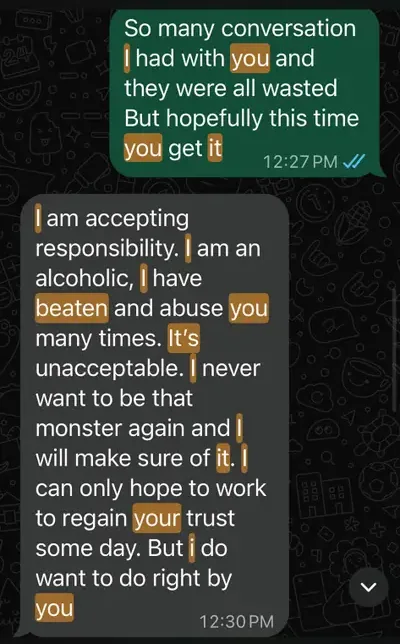
Marcela's evidence Her message is in green, his reply in grey. Highlights come from a search on her phone. -
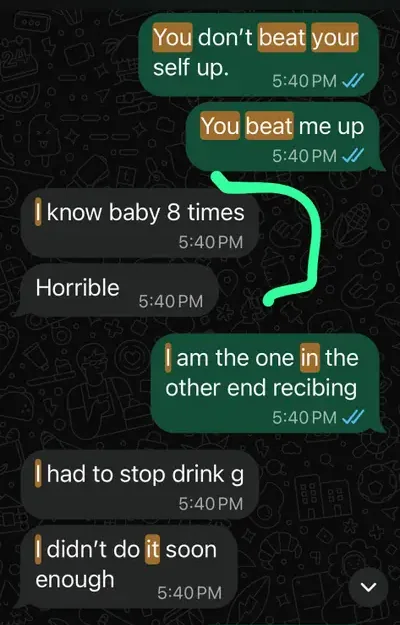
Marcela's evidence She: “You beat me up.” He: “I know baby 8 times. Horrible.” -
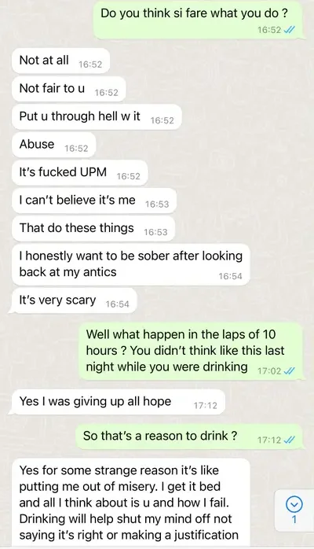
Marcela's evidence She asks whether what he does is fair. He: “Not at all … Put u through hell w it. Abuse … I can't believe it's me that do these things.” -

Marcela's evidence “I will hurt you or end up in jail drunk driving or killing someone.” -
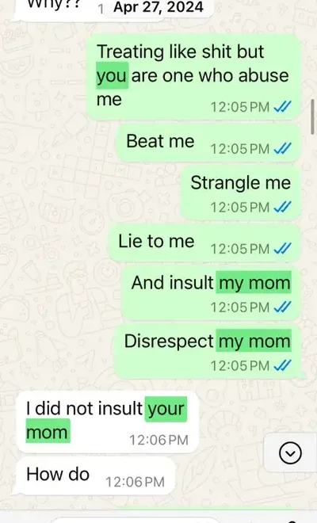
Marcela's evidence April 27, 2024. She lists what he has done. He replies only about her mother. -
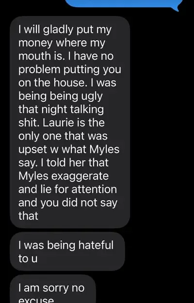
Marcela's evidence He names Myles, and says he told Laurie that Myles exaggerates and lies for attention.
More of what she saved
Further messages from the same phones. Quotes are exact, including the spelling. One is a text he sent to a contact saved as Billy.
-
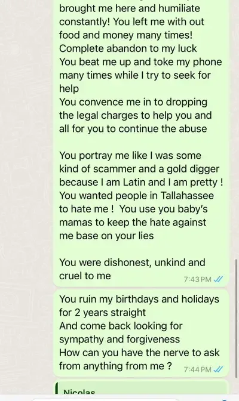
Marcela's evidence She writes that he convinced her to drop the charges, then continued. -
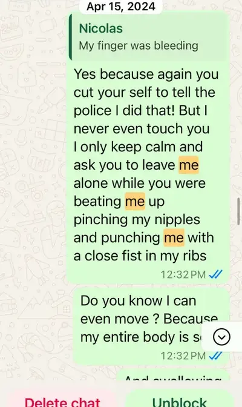
Marcela's evidence April 15, 2024. She describes the assault. He says he never touched her. -
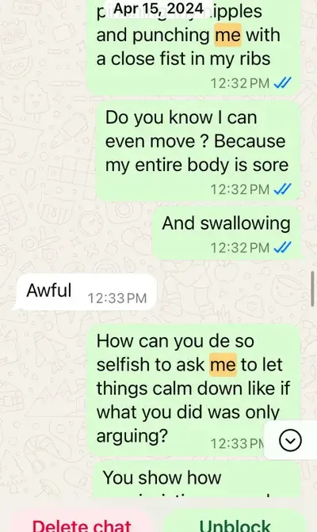
Marcela's evidence The same afternoon. “My entire body is sore.” -
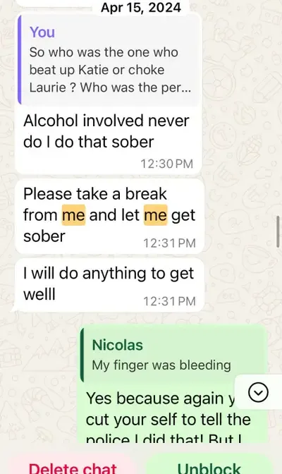
Marcela's evidence She names Katie and Laurie. He says he never does it sober. -
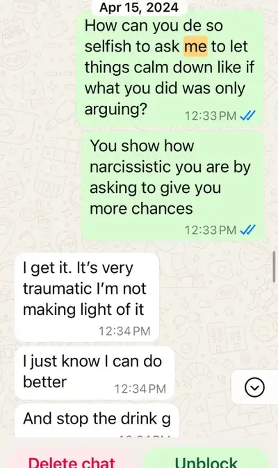
Marcela's evidence “It's very traumatic.” -
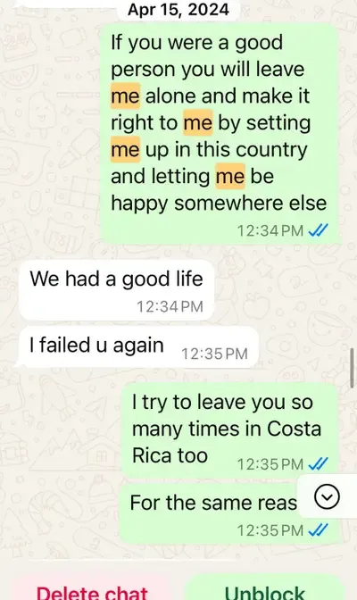
Marcela's evidence “I failed u again.” -
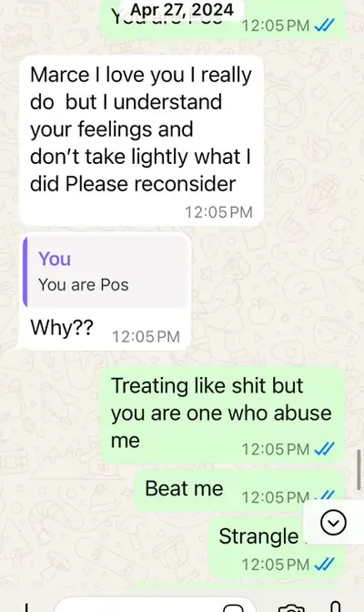
Marcela's evidence April 27. “Don't take lightly what I did.” -
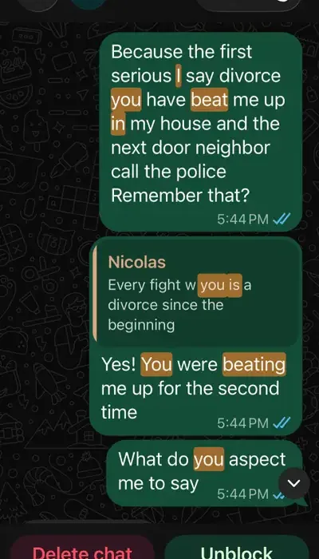
Marcela's evidence A neighbor called the police the first time she said divorce. -
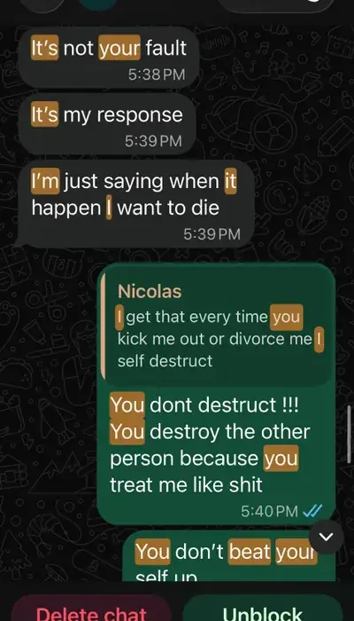
Marcela's evidence “When it happen I want to die.” -
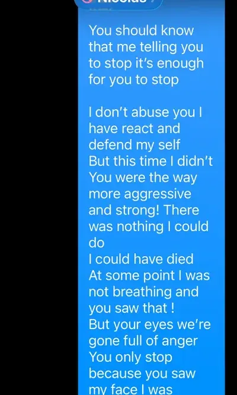
Marcela's evidence “At some point I was not breathing.” -
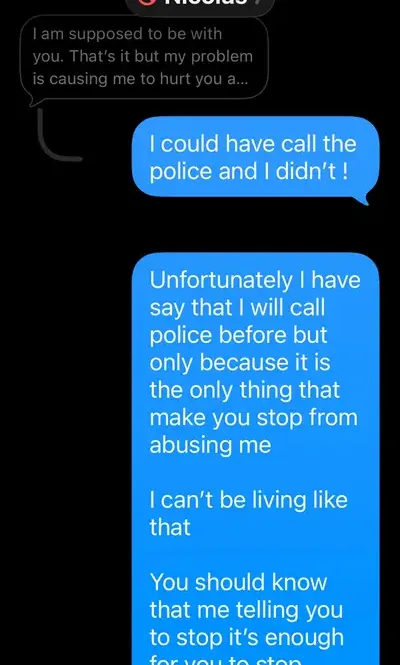
Marcela's evidence Calling the police is, she writes, the only thing that makes him stop. -
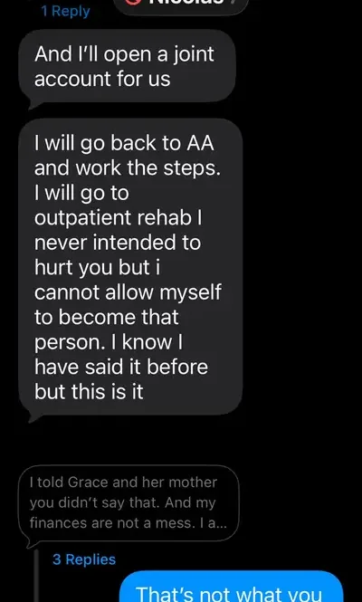
Marcela's evidence He says he will go back to AA and to outpatient rehab. -
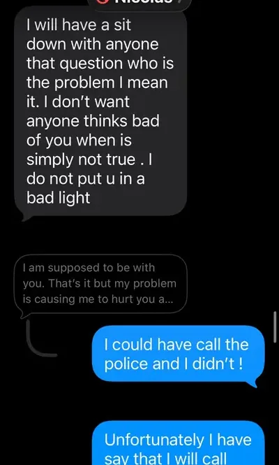
Marcela's evidence “My problem is causing me to hurt you.” -
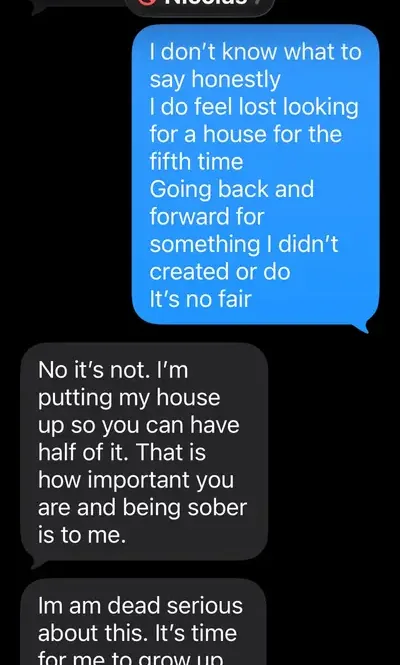
Marcela's evidence “I'm putting my house up so you can have half of it.” -
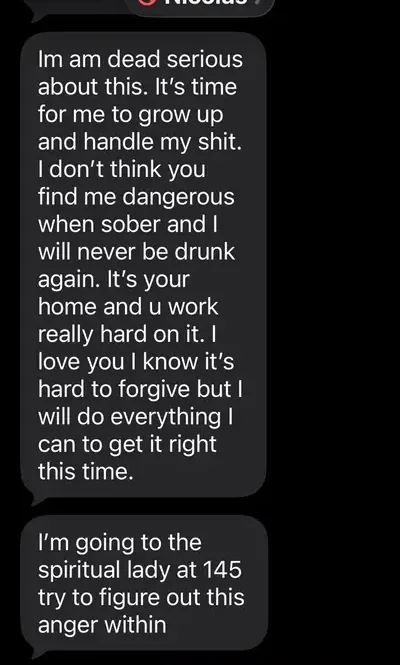
Marcela's evidence “I don't think you find me dangerous when sober.” -
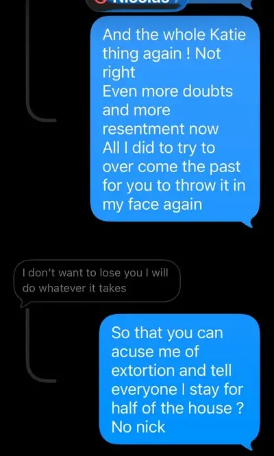
Marcela's evidence She calls it “the whole Katie thing again.” -
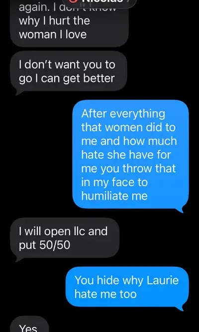
Marcela's evidence She asks why Laurie hates her too. -
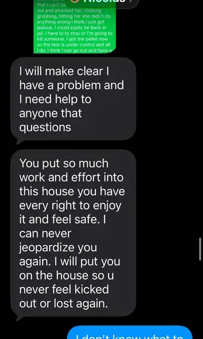
Marcela's evidence Above his apology, part of his own account of choking, grabbing, and a pellet gun. -

Marcela's evidence A text to Billy. “I blacked out and attacked her, choking grabbing, hitting her.”
What she photographed
Marcela photographed her injuries and sent the pictures to her husband as it happened. Each picture below is closed until you choose to open it.
-
April 14, 2024 Her messages that evening, and photographs of bruising sent at 8:47 PM. Show photograph
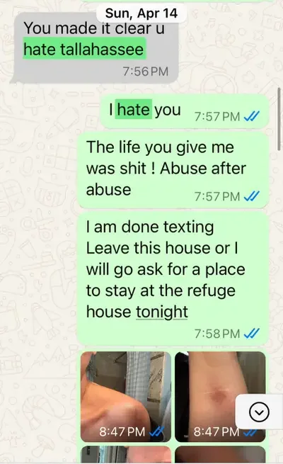
Marcela's evidence April 14, 2024. -
April 15, 2024 “I try but you keep abusing me”, followed by five photographs of bruises and grazes. Show photograph
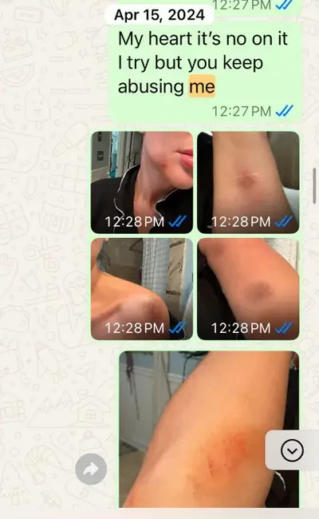
Marcela's evidence April 15, 2024, 12:28 PM. -
April 15, 2024, Myles She asks why she looks like that, and why Myles's room is full of blood. He answers. Show photograph
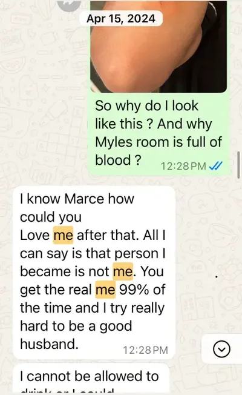
Marcela's evidence April 15, 2024. Myles is named in her message. -
“I lost my mind” He wrote “I'm so sorry” and “I lost my mind”. She sent photographs of a bleeding cut. Show photograph
Marcela's evidence Undated screenshot. -
“I can't believe I do this” The same exchange, a minute later. After her photograph of the cut, he replied. Show photograph
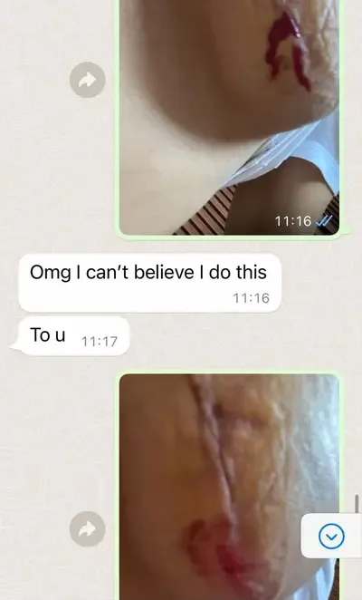
Marcela's evidence “Omg I can't believe I do this. To u.” -
Sent to his mother “He got drunk and this happen,” with a photograph of her hand. Show photograph
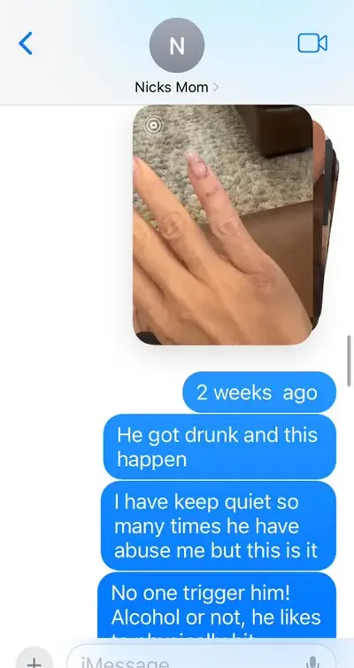
Marcela's evidence To Dottie Belletto. A photograph of her hand from two weeks earlier. -
“I will call the police” She tells his mother she will call the police if he puts his hands on her again, and sends the hand photograph. Show photograph
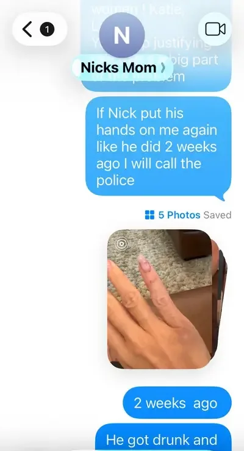
Marcela's evidence To Dottie Belletto.
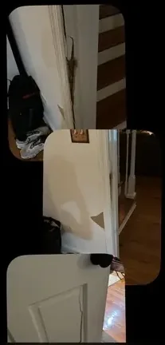
Recordings
Marcela kept two recordings. Neither plays until you press play. Both contain shouting and strong language.
Read the transcript
Dottie Belletto, his mother: “You know how wasted he is.”
Dottie Belletto: “You go upstairs, you have no choice. She's gonna put you in jail. Go upstairs now.”
Nicholas Belletto: “Are you gonna put me in jail, Marcela?”
“Oh my god.”
Audio recording
2 minutes 8 seconds
Read a partial transcript
“You called the police once, already?”
“Leave me alone, Nick!”
“You're making me bleed right now!”
“You're hurting me! … My lip! You're hurting me!”
“Please don't touch me. Please don't touch me.”
“You called the fucking cops on me!”
“Please just leave me alone!”
“File for divorce and be done with me.”
“Don't touch me!”
Selected lines. Passages that could not be made out are left out.
Marcela also wrote to his mother. On her phone that contact is saved as “Nicks Mom.” That is Dottie Belletto.
-
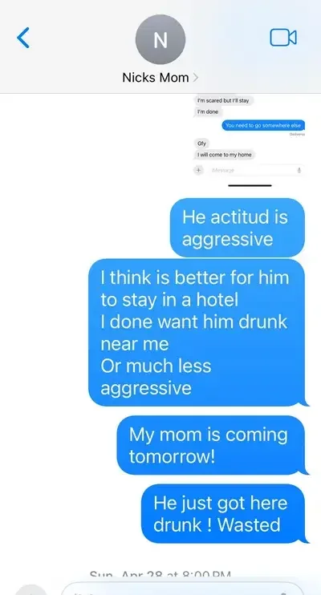
Marcela's evidence To Dottie Belletto, April 29. “He just got here drunk! Wasted.” -
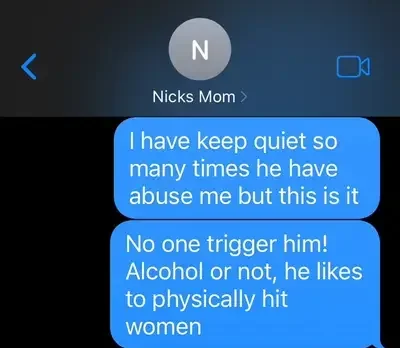
Marcela's evidence To Dottie Belletto. “Alcohol or not, he likes to physically hit women.” -
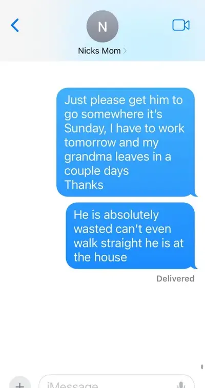
Marcela's evidence To Dottie Belletto. “He is absolutely wasted.” -
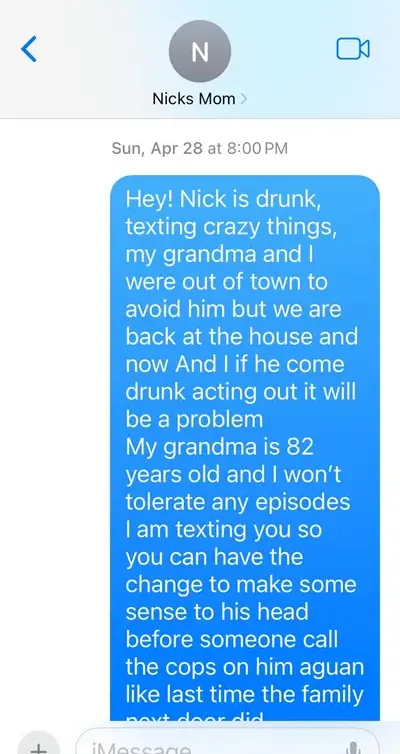
Marcela's evidence April 28. She asks Dottie to talk to him before someone calls the police. -
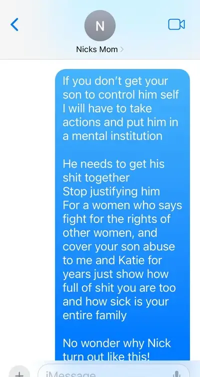
Marcela's evidence She names Katie and says the family has covered his abuse. -
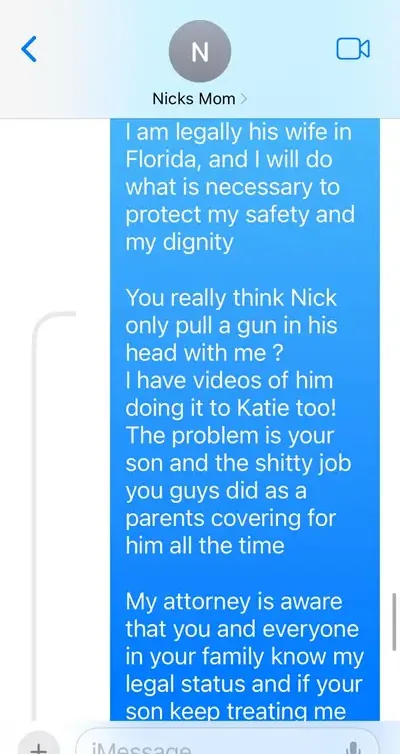
Marcela's evidence She writes that she has video of him pulling a gun with Katie as well. -
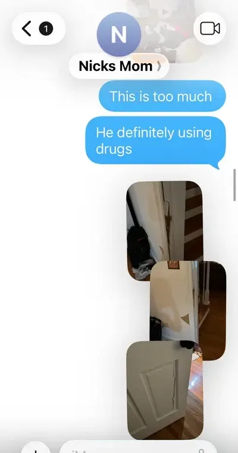
Marcela's evidence The damaged door, sent to Dottie Belletto, with “He definitely using drugs.”
If any of this is familiar
Abuse rarely looks like one event. It is more often a cycle, and it can be hard to see from the inside. Things survivors and advocates often describe:
- Violence, then apology. Remorse and promises to change, followed by another incident.
- A reason that is never the person. Alcohol, stress or jealousy is blamed, as if it made the choice.
- Pressure to stay silent. Anger about calling the police, or persuasion to drop charges.
- Control through what you depend on. Threats about money, housing, children or immigration status.
Abuse is never the fault of the person being harmed. You do not need to be sure what to call it before you talk to someone.
Need help?
These services are free and confidential. You can call just to talk through what is happening.
In immediate danger, call 911.
-
National Domestic Violence Hotline
24 hours a day, every day. English and Spanish.
Call 1-800-799-7233
Text START to 88788
Chat at thehotline.org
En español: espanol.thehotline.org -
Florida Domestic Violence Hotline
24 hours a day. English, Spanish and Creole. Connects you to a certified shelter or center near you.
Call 1-800-500-1119
TTY 1-800-621-4202 -
If you are worried about immigration status
Threatening to report a partner to immigration is a form of abuse. United States law has protections for survivors, whatever their status. The hotlines above can refer you to free legal help.
Plain-language legal information: womenslaw.org
Staying safe online: your browsing history can show that you visited this page. Use a private window, or clear your history afterwards. If you think your device is monitored, use a different one, such as a library computer or a friend's phone.
About this page
- Where the facts come from
- Items marked “Court record” come from public files of the Pinellas County Court and the Leon County Sheriff's Office. Items marked “Marcela's evidence” are screenshots, photographs and recordings she saved herself.
- What an arrest means
- An arrest, a charge or a deferred prosecution agreement is not a conviction. Where a record gives Nicholas Belletto's own response, it is included.
- What has been removed
- Home addresses, phone numbers, identification numbers, passport numbers and profile pictures do not appear on this page. Names that are written in the messages, or in the sworn declaration, are shown as they appear there.